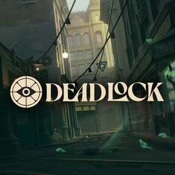

I have been playing Divinity: Original Sin 2 recently. I got into it because I enjoyed Baldur's Gate 3 very much, and they were made by the same people. I am enjoying it. I played it with my dad about a year ago, and then got tired of it until now.
I have also been playing a game called Deadlock. My roommate got me into it. It's fun, but I am absolute trash at it. You play against other players, and I always either lose or need my teammates to carry me.

| Game | Genre |
|---|---|
| Divinity: Original Sin 2 | Turn-based RPG |
| Deadlock | Multiplayer Hero-Shooter |